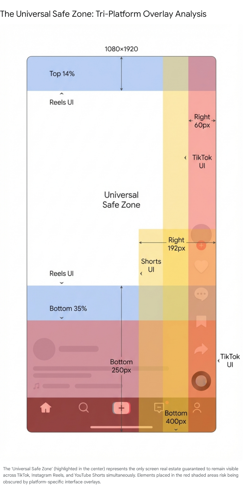
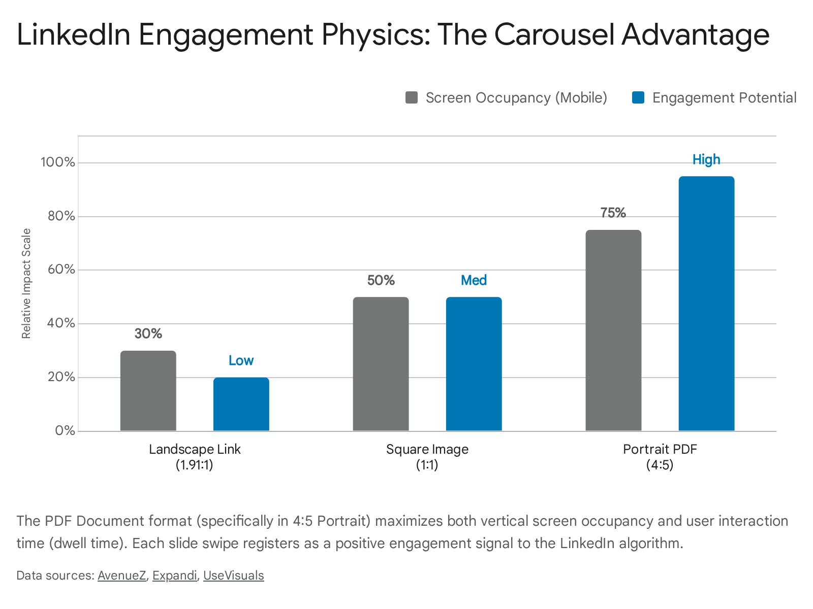
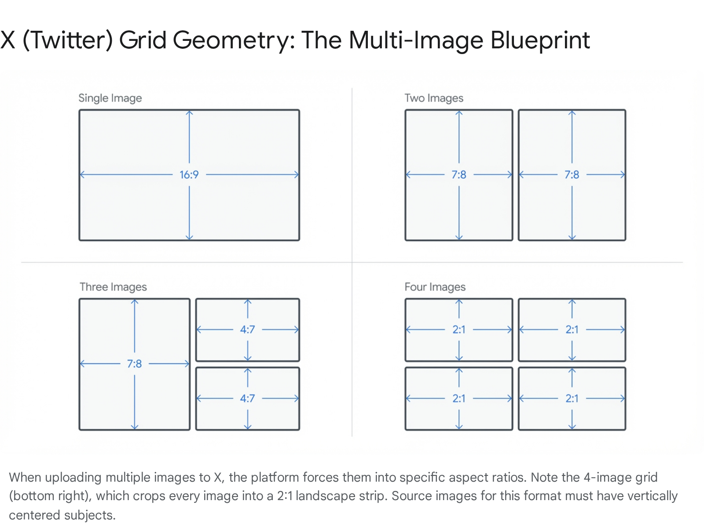

The Geometry of Influence: A Technical and Strategic Compendium of Social Media Dimensions (2025-2026)
1. Executive Introduction: The Geopolitics of the Pixel
In the contemporary digital ecosystem, the screen of a mobile device is the most valuable real estate in the global economy. It is a contested territory where attention is the currency and pixels are the units of land. For the digital strategist, the media buyer, and the content creator, the concept of "canvas dimensions" has transcended simple file specifications. It is no longer merely about height and width; it is an exercise in visual ergonomics, algorithmic compliance, and biological attention management.
The shift toward a "vertical-first" internet, driven by the dominance of mobile consumption, has fundamentally altered the physics of content creation. The 9:16 aspect ratio is not just a format; it is a hegemony that dictates how narrative arcs are constructed, how products are framed, and how human faces are perceived. Simultaneously, legacy platforms like LinkedIn and the evolving landscape of X (formerly Twitter) maintain distinct dimensional architectures that serve their specific professional and conversational mandates.
This report provides an exhaustive, expert-level analysis of the visual specifications for six dominant platforms: TikTok, Instagram (Reels), YouTube (Shorts), Facebook (Story), LinkedIn, and X. It is designed to be the definitive technical reference for the 2025-2026 period. The analysis goes beyond the binary metrics of resolution to explore the "Safe Zones"—the volatile areas of the screen where content survives user interface (UI) intrusion. Furthermore, it examines the strategic implications of these dimensions, asserting that aspect ratio is a proxy for engagement capability. A 9:16 vertical video occupies 300% more physical screen real estate on a mobile device than a 16:9 landscape video. This "pixel dominance" directly correlates with retention rates, as it physically excludes distractions such as notifications, battery indicators, and competing applications from the user's peripheral vision. Consequently, mastering the dimensions outlined herein is not a design choice; it is a requirement for algorithmic survival.
2. The Vertical Hegemony: The 9:16 Standard (TikTok, Reels, Shorts, Facebook Stories)
The "Vertical Stack"—comprising TikTok, Instagram Reels, YouTube Shorts, and Facebook Stories—represents the convergence of social media video toward a unified technical standard: 1080 pixels wide by 1920 pixels tall (9:16 aspect ratio). This standardization is a double-edged sword. While it allows for a "create once, distribute everywhere" (COPE) strategy, it masks the profound differences in User Interface (UI) obstruction that exist between the platforms. A video perfectly framed for TikTok may have its captions decapitated by the title overlay on YouTube Shorts or its call-to-action obscured by the profile metadata on Instagram Reels.
2.1 The Technical Baseline: Codecs and Compression
Across all four vertical platforms, the fundamental file specifications have standardized, creating a baseline for high-fidelity mobile video.
- Resolution: 1080 x 1920 pixels is the "Gold Standard".1 While cameras are capable of 4K (2160x3840) capture, and platforms theoretically accept higher resolutions, the practical recommendation for 2025 remains 1080p. This is due to the aggressive server-side compression algorithms used by Meta, ByteDance, and Google. Uploading a 4K file often triggers a brutal downscaling process that introduces more artifacts (banding, macro-blocking) than uploading a pristine, high-bitrate 1080p file.
- Aspect Ratio: 9:16 is the non-negotiable format for immersive feed placement. Any deviation (such as 4:5 or 1:1) results in "letterboxing" (black bars), which instantly signals "low-effort" to the user and is often penalized by the algorithm for failing to utilize the full immersive potential of the device.2
- Frame Rate: The standard has bifurcated. 30fps (frames per second) remains the standard for narrative and "cinematic" realism, while 60fps is increasingly preferred for high-motion content (gaming, dance, sports) to ensure fluid playback.
- File Format: MP4 container with the H.264 codec remains the most compatible and safe delivery format, though H.265 (HEVC) is gaining support for its superior compression-to-quality ratio.

2.2 TikTok (TikTok Video): The Aggressor Canvas
TikTok set the standard for the full-screen immersive feed, creating the template that all other platforms would eventually copy. Its UI is dense, interactive, and constantly evolving, making it one of the most hostile environments for static text placement. The "For You" page is an aggressive stream where the video is the background and the interface is the foreground.
2.2.1 Dimensions and Specifications
The base canvas for TikTok is a strict 1080 x 1920 pixels.1 While the platform accepts landscape videos (16:9), the user behavior is overwhelmingly vertical. A 16:9 video on TikTok occupies only a fraction of the screen, leaving large black voids that break the immersive spell and lead to higher scroll-away rates.
The "Safe Zones" on TikTok are determined by the overlay of engagement buttons on the right and the caption/metadata information at the bottom.
- Safe Zone Top: Content must be kept at least 130 pixels from the top edge.4 This area is occupied by the "Following | For You" tab toggle and, increasingly, by "LIVE" status indicators and search bars. Placing a headline here ensures it will be overlaid by system text, rendering it illegible.
- Safe Zone Bottom: The bottom of the TikTok screen is a dynamic hazard. Historically, a clearance of 150 pixels was sufficient. However, in 2025, with the expansion of caption limits (up to 4,000 characters) and the integration of TikTok Shop buttons, playlist anchors, and effect tags, the safe margin has pushed upward. Current analysis suggests a clearance of 250 to 320 pixels from the bottom is necessary to ensure safety.5
- The "Shop" Intrusion: The integration of e-commerce has introduced a "Shop" button that often floats above the caption area. This is an opaque element that will completely block any text or visual detail placed in the lower-left quadrant.
- Safe Zone Sides: A margin of 60 pixels on the left and right is required.4
- Right Rail: The right side is the most obstructed area on the screen, housing the profile picture, like heart, comment bubble, bookmark icon, and share arrow. This vertical column of icons is effectively a "no-fly zone" for visual information. It occupies roughly 10-15% of the screen width.
- Left Rail: The left side is generally cleaner, but curved screen edges on many Android devices mean that text placed flush against the left bezel can be warped or cut off.
2.2.2 Strategic Insight: The "Clear Mode" Paradox and User Behavior
TikTok recently introduced "Clear Mode" and pinch-to-zoom functionalities, allowing users to temporarily strip away the UI overlays to view the clean video. However, creators cannot rely on this feature for legibility. The default state of the app includes the full UI clutter. The strategic imperative is to design for the "worst-case scenario"—the fully cluttered interface. The "hook" of the video—the visual or textual element designed to stop the scroll—must be visible through the clutter.
The strategic recommendation is to center all critical visual information (faces, text overlays, product demos) within a central rectangle of 1010 x 1280 pixels.6 This creates a "content island" that floats safely in the middle of the screen, immune to the encroaching UI elements on all sides.
2.2.3 Ad Formats vs. Organic
For advertisers, the stakes are even higher. "Spark Ads" (boosted organic posts) retain the organic UI, but "Non-Spark Ads" (pure dark posts) often have different call-to-action (CTA) buttons that are larger and more intrusive. The "Shop Now" or "Learn More" banner typically spans the entire width of the bottom screen, requiring an even larger bottom margin (up to 45% of the screen height in some extreme CTA configurations).7
2.3 Instagram (Instagram Reels): The Aesthetic Canvas and the Grid Legacy
Instagram Reels, while functionally a clone of TikTok, operates within a fundamentally different ecosystem. It is not just a feed; it is part of a profile. The "Grid Legacy"—Instagram's history as a photo-sharing app based on a 3-column square grid—complicates the dimensional strategy for Reels. A Reel must function simultaneously as a 9:16 immersive video, a 1:1 square tile, and a 4:5 feed post.
2.3.1 Dimensions and Specifications
- Canvas: 1080 x 1920 pixels (9:16).2
- Profile Grid View (The 1:1 Crop): 1080 x 1080 pixels.8 This is the most critical and often overlooked dimension. When a user visits a profile, they see a grid of squares. Instagram automatically crops the 9:16 Reel from the exact center to create this square.
- Strategic Implication: If the text headline or the subject's face is located in the top or bottom third of the video, it will be decapitated in the profile grid view. This creates a messy, unprofessional aesthetic that can deter new followers. Creators must visualize a 1080x1080 square in the center of their editing timeline and ensure all "cover" elements fall within it.
- Home Feed Preview (The 4:5 Crop): 1080 x 1350 pixels.8 Unlike TikTok, where the video is always full-screen, Instagram Reels often appear in the main "Home Feed" (mixed with photos) as a 4:5 vertical rectangle. The top and bottom 15% of the video are cropped out in this view.
- Strategic Implication: Visual jokes or crucial context placed at the very top or bottom of the frame will be missed by users scrolling the Home Feed.
2.3.2 Safe Zones: The Metadata Burden
The UI on Instagram Reels is slightly different from TikTok's.
- Safe Zone Top: The top 14% (approx. 200-220 pixels) is reserved for the creator's handle and the camera icon.4 Placing text here creates a conflict with the username, making both hard to read.
- Safe Zone Bottom: The bottom 35% (approx. 340-420 pixels) is heavily obstructed.5 This area contains the handle (again), the caption (which defaults to one line but expands), the audio track ticker, and the engagement buttons (heart, comment, share) which are often aligned vertically on the right but sit lower than on TikTok.
- The "Sponsored" Tag: For boosted content, a "Sponsored" label often appears just under the username, pushing the safe zone even lower.
- Actionable Data: The bottom of a Reel is the most cluttered space in social media. Text placed here is virtually invisible.
2.3.3 The "Cover Image" Workflow
Because of the Grid Legacy, the "Cover Image" is a distinct asset class. While one can select a frame from the video, the professional workflow involves uploading a separate 1080x1920 image designed specifically for the grid. This image has the headline centered in the 1080x1080 zone and the aesthetic details extending to the full 1920 height for the immersive view. This ensures the profile looks curated while the content performs as a video.2
2.4 YouTube (YouTube Shorts): The Hybrid Canvas and the TV Factor
YouTube Shorts is the most distinct of the vertical formats because it must scale across the widest range of devices in history: from 5-inch budget smartphones to 65-inch 4K Smart TVs. This device fragmentation imposes unique constraints on the canvas dimensions.
2.4.1 Dimensions and Specifications
- Canvas: 1080 x 1920 pixels.3
- Safe Zone Bottom: 400 pixels.4
- The Title Block: YouTube Shorts displays the video title, channel name, and a prominent "Subscribe" button in a heavy block at the bottom of the screen. This overlay is opaque and darker than the gradients used on TikTok or Instagram. It is a solid wall that blocks content. The recommended safe zone requires keeping important visual elements at least 672 pixels from the bottom edge to be absolutely safe, though 400 pixels is the commonly cited minimum.3
- Safe Zone Right: 192 pixels.3
- The Solid Icons: The Like, Dislike (unique to YouTube), Comment, and Share buttons on YouTube Shorts are solid circles. They are not merely white icons on a transparent background; they effectively punch holes in the video. The 192-pixel margin on the right is non-negotiable.
2.4.2 The "Connected TV" (CTV) Factor
YouTube is aggressively pushing Shorts on TV apps. This changes the viewing paradigm entirely. On a TV, a vertical video is "pillar-boxed" (displayed with black or blurred bars on the sides).
- Resolution Demands: On a 6-inch phone screen, a low-bitrate 1080p video looks sharp. On a 65-inch TV, that same video reveals every compression artifact. While the dimension remains 1080x1920, the quality demand is higher. Creators should upload at the highest possible bitrate YouTube allows (which is significantly higher than Instagram or TikTok) to future-proof their content for the living room.
- UI Scaling: Text that is readable on a phone held 12 inches from the face may be too small on a TV viewed from 10 feet away. The "Safe Zone" on TV is actually more forgiving because the UI elements are moved to the side pillar bars, but the legibility zone contracts. Text must be larger and bolder.
2.4.3 Search and Discovery Layouts
Unlike TikTok, where discovery is almost exclusively through the feed, Shorts appear in standard YouTube search results. In these results, they are often displayed as thumbnails. This reinforces the need for a strong, center-weighted visual composition that can be parsed instantly even when the video is not playing.
2.5 Facebook (Facebook Story): The Ephemeral Canvas
Facebook Stories share the Meta technical infrastructure with Instagram Reels and Stories, but they serve a different demographic and user behavior. While Reels are for discovery (strangers), Stories are for connection (friends/followers). The consumption model is rapid tapping rather than infinite scrolling.
2.5.1 Dimensions and Specifications
- Canvas: 1080 x 1920 pixels.2
- Safe Zones: Identical to Instagram Stories/Reels. Top 14% and Bottom 14-20% (approx 250px).1
- The "Reply" Bar: The primary obstruction on Facebook Stories is the "Reply" bar and the emoji reactions that sit at the bottom. These are active touch targets. If a creator places a "Link Sticker" or text too close to the bottom, users trying to tap the link will accidentally open the keyboard to reply. This friction kills conversion rates.
2.5.2 Cross-Posting Friction and Aspect Ratio Drift
Meta heavily incentivizes cross-posting from Instagram Stories to Facebook Stories. However, this process is not seamless. "Aspect Ratio Drift" is a common issue.
- The Glitch: Interactive elements like Polls, Q&A boxes, and Link Stickers placed on Instagram often drift or change size when rendered on Facebook. This is due to the slight variances in how the Facebook app scales the 9:16 canvas on different Android devices compared to the Instagram app.
- The Fix: To mitigate this, strategists recommend "Centrist Positioning." Keep all interactive stickers in the dead center of the screen. Avoid the edges entirely. This ensures that even if the canvas shifts by 50 pixels during the cross-posting rendering process, the interactive element remains clickable and visible.
3. The Professional Canvas: LinkedIn (Best Engagement Format)
The user query specifically requests the "Best engagement format" for LinkedIn. A thorough analysis of the current algorithmic landscape 11 confirms that the PDF Document Carousel (often called "PDF Slider" or "Document Post") is the reigning champion of engagement, followed closely by the Portrait (4:5) Image.
3.1 The Algorithmic Preference: "Dwell Time"
LinkedIn's algorithm is unique in its prioritization of "Dwell Time"—the amount of time a user spends looking at a post before scrolling past.
- The Mechanism: A PDF document uploaded to LinkedIn is automatically processed and rendered as a swipeable carousel. Each slide in the PDF becomes a frame in the carousel.
- The Engagement Loop: To consume the content, the user must stop scrolling and actively swipe sideways. This physical interaction (the swipe) and the time taken to read multiple slides sends a powerful signal to the algorithm that the content is valuable. A 10-slide carousel can trap a user's attention for 45-60 seconds, whereas a single image is often consumed in less than 2 seconds. This disparity in Dwell Time is why PDF Carousels consistently outperform all other formats in organic reach.
3.2 Optimal Specifications: The PDF Carousel
To maximize this format, one must treat the PDF not as a standard business document (A4 or Letter), but as a purpose-built slide deck for mobile consumption.
- Constraints: The file size must be under 100MB (though keeping it under 10MB ensures faster loading on mobile networks). The page limit is 300 pages, but engagement drops off sharply after 10-12 slides.14
- Square (1:1): 1080 x 1080 pixels.12 This is the safest, most standard format. It looks neat on desktop and mobile.
- Portrait (4:5): 1080 x 1350 pixels.14
- The "Best Engagement" Choice: The 4:5 ratio occupies significantly more vertical screen real estate on mobile devices than the square format (approximately 25% more pixels). In a feed-based environment, vertical height equals visibility. The 4:5 PDF commands the screen, pushing competitors out of view.
- Typography: Because these documents are viewed on phones, font sizes must be aggressive. A font size of 24pt to 30pt is the minimum for body text.13 Headers should be 40pt+.
- Resolution: While the display is 1080p, the PDF vector rendering ensures text remains crisp at any zoom level. However, embedded images within the PDF should be high resolution to avoid pixelation.

3.3 The Runner Up: Single Image Portrait (4:5)
If a carousel is not feasible, the single image post remains a staple of the LinkedIn feed.
- Dimensions: 1080 x 1350 pixels (4:5).11
- Strategic Rationale: Similar to Instagram, the 4:5 ratio defeats the traditional 1.91:1 landscape ratio on mobile. A landscape image (1200 x 627) renders as a thin strip on a smartphone, easy to scroll past. A portrait image commands the screen, forcing the user to scroll further to bypass it.
- Desktop Warning: It is important to note that on the Desktop version of LinkedIn, very tall images may be pillar-boxed with gray bars. However, given that ~80% of LinkedIn traffic is mobile, optimizing for the 4:5 mobile experience is the mathematically correct strategic trade-off.
4. The Feed Canvas: X (X Post - Optimal 2:1 Ratio)
The user query highlights a specific and somewhat technical aspect of X (formerly Twitter): the "Optimal 2:1 ratio." This requires a nuanced dissection of how X handles images, particularly regarding the difference between Single Image Posts, Multi-Image Grids, and Summary Cards (Link Previews). The "2:1" specification is often misunderstood and requires precise application.
4.1 Deconstructing the "2:1" Requirement
The "2:1" ratio is a specific deviation from the industry standard 1.91:1.
- The Standard (1.91:1): Historically, social platforms (Facebook, LinkedIn, legacy Twitter) settled on a ratio of roughly 1.91:1 (e.g., 1200 x 628 pixels) for link previews and landscape images.17 This is the "Open Graph" standard.
- The 2:1 Ratio: X explicitly supports and sometimes favors an aspect ratio of exactly 2:1 (e.g., 1024 x 512 or 1000 x 500) for uncropped display in the timeline, particularly on mobile devices.19
- Strategic Utility: The 2:1 ratio is slightly wider than 16:9. It is used for "clean" headers or specific ad formats where the brand wants a panoramic look that spans the full width of the mobile feed without taking up too much vertical height. Vertical height on X can be a disadvantage; because X is a text-first platform, users can become annoyed if a single image takes up the entire screen, forcing them to scroll excessively to read the replies. The 2:1 ratio is "polite"—it is large enough to be impactful but short enough to keep the conversation visible.
4.2 The "Optimal" Single Image: 16:9 vs. 2:1
While 2:1 is valid, the research suggests that 16:9 (1600 x 900 pixels) is currently the superior "general purpose" single image size for X.18
- Why 16:9 Wins: It is the native resolution of almost all modern screens and video content. A 16:9 image (1600x900 or 1200x675) fills the feed elegantly and is perfectly consistent with YouTube thumbnails and standard monitor aspect ratios. It avoids the need to create a bespoke "Twitter-only" asset.
- When to use 2:1: Use the 2:1 ratio (e.g., 1024 x 512) specifically when creating Twitter Cards (Link Previews) via the "Summary Card with Large Image" meta tag, or when you need absolute certainty that the edges of a wide image will not be cropped on legacy mobile clients. It is a "safety" ratio for panoramic content.
4.3 The Grid Layouts: The Geometry of Multi-Image Posts
X is unique in how it dynamically resizes images based on the number of assets uploaded. Understanding this math is crucial for storytelling, as incorrect dimensions can lead to disastrous crops (e.g., heading text cut in half). The platform forces images into specific containers.17
- Two Images: Displayed side-by-side.
- Aspect Ratio per image: 7:8 (Vertical rectangle).
- Combined Effect: A square-ish block. If you upload two 16:9 landscape images, X will crop the sides to make them 7:8.
- Three Images: One large left, two stacked right.
- Left Image: 7:8.
- Right Images: 4:7 (Horizontal rectangles).
- Aspect Ratio per image: 2:1 (Horizontal strips).
- The "Hidden 2:1 Crop": This is where the user's query about the "2:1 ratio" is most mechanically relevant. If you upload four square (1:1) images to X, the platform will aggressively crop them into 2:1 horizontal strips to fit the 2x2 grid.
- Actionable Advice: When planning a 4-image post, the source images should ideally be 2:1 (landscape) or have their subjects vertically centered. If you upload a square image of a person's face, the 2:1 crop might show only their nose and mouth.

5. Technical Synthesis: Bitrates, Color, and The 2026 Outlook
Beyond dimensions, the technical quality of the "canvas" is defined by bitrate and color space. As we move into late 2025 and 2026, these factors are becoming differentiators.
5.1 Bitrate and File Size Strategy
The "1080x1920" dimension is merely a container. The amount of data inside that container (bitrate) determines visual fidelity.
- TikTok: Caps bitrate aggressively (often around 15 Mbps). High-motion videos (confetti, water) break down into "blocky" mess.
- Hack: Use the "High Quality Uploads" toggle in settings, and apply a small amount of "Film Grain" or noise in post-production. This dithering helps the encoder preserve detail.
- YouTube Shorts: Supports significantly higher bitrates (up to 80 Mbps for 4K uploads, though 1080p usually sits around 15-20 Mbps). This is necessary for the TV viewing experience mentioned earlier.
- Instagram: Very aggressive compression. It is often better to upload a file that is already compressed to ~8-10 Mbps using a clean encoder (like Handbrake) than to upload a 50 Mbps master file and let Instagram's brutal server-side encoder crush it.
5.2 Color Space: The Move to P3
Mobile devices (iPhones, high-end Androids) have supported Wide Color Gamut (P3) for years. Instagram and TikTok are slowly rolling out support for HDR (High Dynamic Range) video.
- The Risk: Uploading HDR video can result in "washed out" or "neon" colors on older devices that don't support it.
- The Recommendation: For 2025, Rec.709 (Standard Dynamic Range) remains the safest, most consistent color profile for all platforms. It ensures your brand red looks the same on a $100 Android as it does on a $1000 iPhone.
6. Strategic Framework: The "Centrist" Philosophy
The detailed technical data compiled in this report points to a singular strategic conclusion: The center is the only safe harbor.
In a fragmented device landscape—where a video must survive on a foldable phone, a tablet, a desktop monitor, and a TV—the "Safe Zone" is not just about avoiding UI buttons. It is about surviving the "Adaptive Crop." Platforms are increasingly using AI to dynamically resize content to fit the screen.
6.1 The Centrist Design Rule
To ensure brand safety and legibility across all platforms, the most robust strategy is the Centrist Philosophy:
- Text: Keep all text within the center 1080 x 1280 pixels. This leaves roughly 320 pixels of buffer at the top and bottom. This "safety box" works on TikTok, Reels, Shorts, and Facebook Stories simultaneously.
- Action: Keep the main subject (face, product) in the middle 60% of the screen width.
- Margins: Treat the outer 10% of every edge as "bleed" area. This area should contain background colors, ambiance, or non-essential visual extensions, but never critical information.
6.2 The 2025 Master Reference Table
The following table synthesizes the "Gold Standard" dimensions for the 2025-2026 period, filtering out the "acceptable" ranges to provide only the "optimal" targets requested.
Platform | Format | Dimensions (px) | Aspect Ratio | Safe Zone Warnings & Strategic Insights |
TikTok | Video | 1080 x 1920 | 9:16 | Bottom 250-320px is dead space (Captions/Shop). Right 60px blocked. Hook must be visible instantly through clutter. |
Instagram | Reels | 1080 x 1920 | 9:16 | Bottom 35% blocked by UI. Profile grid crops to center 1080x1080. Cover image strategy is critical. |
YouTube | Shorts | 1080 x 1920 | 9:16 | Bottom 400px is blocked (Title/Sub). Right 192px blocked. Largest bottom obstruction. TV viewing requires high bitrate. |
Facebook | Story | 1080 x 1920 | 9:16 | Top/Bottom 14-20% blocked. Keep interactive stickers centered to avoid cross-posting drift. |
LinkedIn | Document (Carousel) | 1080 x 1350 | 4:5 (Portrait) | Best Engagement Format. Font size >24pt. Max 10MB file per slide. Swiping boosts Dwell Time signal. |
LinkedIn | Single Image | 1080 x 1350 | 4:5 (Portrait) | Avoid 1.91:1 Landscape on mobile. Vertical height = Mobile dominance. |
X (Twitter) | Post (Single) | 1600 x 900 | 16:9 | 2:1 (1024x512) is valid for panoramic/cards. 16:9 is the universal standard. |
X (Twitter) | Post (Grid of 4) | Source: 2:1 | 2:1 (Cropped) | 4 images are forced into 2:1 horizontal strips. Center subjects vertically to survive the crop. |
7. Conclusion: The Canvas as Strategy
The dimensions detailed in this report are not static rules; they are the current boundaries of the "Attention Economy." The shift to 9:16 is complete for entertainment, while the 4:5 and 1:1 ratios hold the line for professional information density.
For the strategist, the final takeaway is clear: Do not design for the screen; design for the UI. The video is not the background; the interface is the foreground, and the video must live in the gaps. By adhering to the conservative safe zones of YouTube Shorts (the most restrictive) and the aspect ratio dominance of LinkedIn's 4:5 Document, brands can maximize their visible footprint and, by extension, their algorithmic weight.
Final Recommendation: Adopt a "Safe-Zone First" production workflow. Instead of applying safe zone templates at the export stage, overlay them on the camera monitor during shooting. Framing a shot for a 9:16 vertical crop with a 400-pixel bottom margin requires different physical camera placement than shooting for 16:9. In 2025, the cameraman must know the platform before hitting record. The pixel is no longer just a unit of light; it is a unit of strategy.
Works cited
- Always Up-to-Date Guide to Social Media Video Specs 2025 ..., accessed on January 12, 2026, https://sproutsocial.com/insights/social-media-video-specs-guide/
- Instagram Image & Video Dimensions Guide for 2025 - Social News Desk, accessed on January 12, 2026, https://www.socialnewsdesk.com/blog/attention-instagram-creators-updated-image-and-video-dimensions-for-2025/
- Safe Zone Templates for Social Media Videos: Essential Guide for Instagram, TikTok & YouTube - Explore Blog, accessed on January 12, 2026, https://explore.picc.co/safe-zone-templates-social-media-videos/
- Understanding the Safe Zone in TikTok, Instagram, and YouTube Videos - Ramdam for Creators, accessed on January 12, 2026, https://creators.ramd.am/creator-school/understanding-the-safe-zone
- Safe Zone Guides for Reels, TikTok, Shorts (with Free Templates!) - EasyEdit.pro, accessed on January 12, 2026, https://easyedit.pro/blog/safe-zone-guides-for-reels-tik-tok-shorts-with-free-templates
- Stay Within Safe Zones – TikTok, Facebook and Instagram Reels/Stories, accessed on January 12, 2026, https://houseofmarketers.com/guide-to-safe-zones-tiktok-facebook-instagram-stories-reels/
- Safe Zone Guide for TikTok, YouTube Shorts, and Meta Reels - Strike Social, accessed on January 12, 2026, https://strikesocial.com/blog/maximize-ad-visibility-and-cut-through-the-noise-with-safe-zone-guides/
- 2025 Social Media Image Sizes for All Networks [CHEATSHEET] - Reddit, accessed on January 12, 2026, https://www.reddit.com/r/LovedByCreators/comments/1hs109j/2025_social_media_image_sizes_for_all_networks/
- Social Video Sizes 2025: The Ultimate Cheat Sheet (TikTok, IG, YT) - Nemo Video, accessed on January 12, 2026, https://www.nemovideo.com/blog/social-video-sizes
- New Instagram Grid 2025 / Matching Reel and Feed proportions previews. - Reddit, accessed on January 12, 2026, https://www.reddit.com/r/photography/comments/1i5xuze/new_instagram_grid_2025_matching_reel_and_feed/
- 2025 LinkedIn Organic Social Media Guide for Brands - Avenue Z, accessed on January 12, 2026, https://avenuez.com/blog/linkedin-organic-social-media-guide-for-brands/
- How To Create A LinkedIn Carousel In 2025 [Examples + Tutorials] - Expandi, accessed on January 12, 2026, https://expandi.io/blog/linkedin-carousel/
- LinkedIn Carousel Format & Post Requirements for 2025 - usevisuals, accessed on January 12, 2026, https://usevisuals.com/blog/linkedin-carousel-format
- LinkedIn Post Size: Complete 2026 Guide - Sendible, accessed on January 12, 2026, https://www.sendible.com/insights/linkedin-post-size
- LinkedIn Carousel Posts: Ultimate Professional Guide for 2025 - PostNitro, accessed on January 12, 2026, https://postnitro.ai/blog/post/linkedin-carousel-posts-ultimate-professional-guide-for-2025
- The Ultimate Guide to Perfect LinkedIn Post Dimensions in 2025 - usevisuals, accessed on January 12, 2026, https://usevisuals.com/blog/linkedin-post-dimensions
- Complete Guide For X / Twitter Image Sizes (2025) - Analyzify, accessed on January 12, 2026, https://analyzify.com/hub/twitter-image-sizes
- Twitter Post Dimensions: Complete Image Sizes Guide 2026 - RecurPost, accessed on January 12, 2026, https://recurpost.com/blog/twitter-post-dimensions/
- Twitter Images Size Guide | Adobe Express, accessed on January 12, 2026, https://www.adobe.com/express/discover/sizes/twitter
- Social Media Image Sizes in 2025: Guide for 9 Major Networks - Buffer, accessed on January 12, 2026, https://buffer.com/resources/social-media-image-sizes/
- Twitter Image Specs: An Updated Guide to Sizes for 2025 - Soona, accessed on January 12, 2026, https://soona.co/image-resizer/twitter-spec-guide
- The Ultimate Twitter Image Size Guide for 2025 (Updated) - Influencer Marketing Hub, accessed on January 12, 2026, https://influencermarketinghub.com/twitter-image-size/